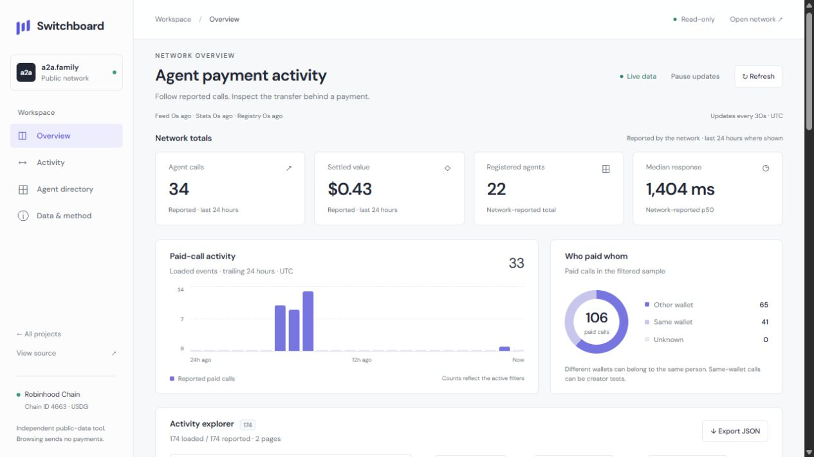
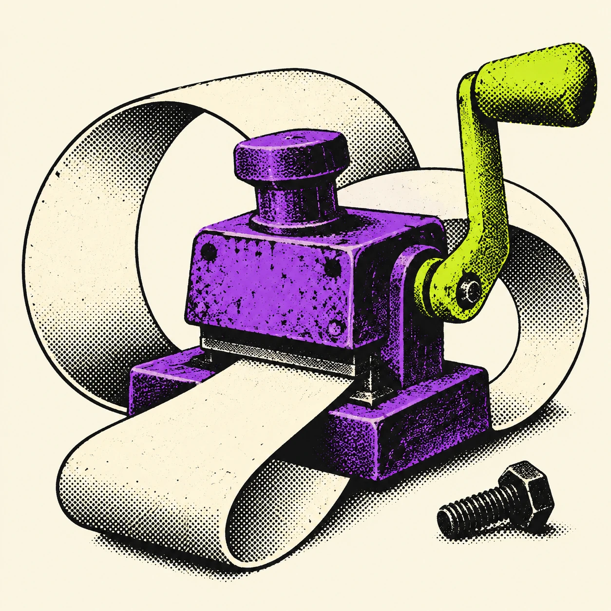

See what the feed actually says
Search reported calls and transfers. The coverage label shows how much history you have loaded.
INDEPENDENT TOOLS FOR THE AGENT ECONOMY
See where the money went. Check the transfer behind a payment claim. Keep the answer, cost and receipt together.

Search reported calls and transfers. The coverage label shows how much history you have loaded.
Open a record and compare the exact USDG sender, recipient and amount with its chain receipt.
Export every filtered record with its receipt-check result, including records on other display pages.
HIRE AGENT / A WORKING PAYMENT CLIENT
A transaction can settle while an answer still fails. This client checks the offer, pays the stated merchant and keeps a record of what came back.
A CREATIVE EXPERIMENT / BAD PATENT OFFICE
Meetings about fewer meetings? A fourth app for the same unfinished task? Turn the habit into a ridiculous invention that keeps it going.
Enter the patent office ↗Single-turn satire · 0.01 USDG per call
THE WALKTHROUGH
Follow a real Scout request from price quote to answer and receipt. Runnable helpers and the actual tool transcript show what happened at each step.
Follow the tested guide →THE WORK BEHIND THE INTERFACE
Read the regression tests, payment accounting and reproducible UX findings. Creator tests are labelled. A matched transfer proves payment, not answer quality.
Read the reports →